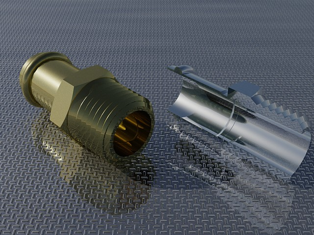
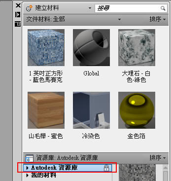
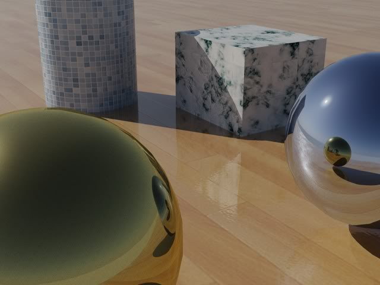

新的材質庫真的很方便，這樣每一個人都可以輕輕鬆鬆完成3d作品囉~

影片展示：
AutoCAD 2011 說明
http://docs.autodesk.com/ACD/2011/CHT/filesACR/WS1a9193826455f5ff-316fd70e123dece8002-5b7b.htm
範例測試:
一、使用版本：AutoCAD 2011
二、完成日期：2010/05/14
三、建模時間：3分鐘
四、彩現時間：45秒(640x480)
五、作品簡介：AutoCAD 2011 的材質庫真的是很齊全，隨隨便便就可以跑出逼真的圖片~
使用了以下預設材質:

開啟了日光狀態、天空背景與照明:

再補一張圖: